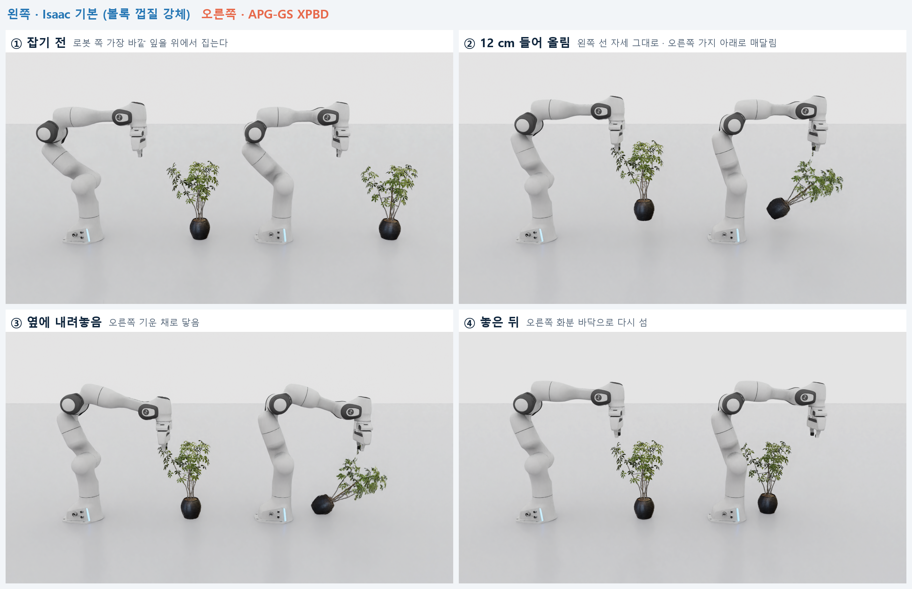

APG-GS — 메쉬 없는 3DGS 변형
가우시안 그래프 위의 CUDA XPBD 로 3DGS 를 직접 변형하고, 변형에 맞춰 렌더링 공분산을 바꾼다 (연구용 SIBR 뷰어).
비교 1 · 물체 ↔ 환경 — 누르기 · 던지기 (wolf)
같은 3DGS 자산에 같은 낙하 · 압축 · 충돌 조건. 왼쪽은 Isaac Sim 기본 방식(볼록 껍질 강체 하나, 초록 선), 오른쪽은 가우시안 물리 층(APG-GS XPBD).
왼쪽 · Isaac 기본오른쪽 · APG-GS XPBD
렌더링 형상에 정합된 접촉APG-GS 그려지는 가우시안 타원체로 접촉 판정
Isaac 기본 볼록 껍질이 다리 사이 · 꼬리 밑 빈 곳까지 채움
Isaac 기본 볼록 껍질이 다리 사이 · 꼬리 밑 빈 곳까지 채움
눌렸다가 복원APG-GS 높이 27.0 → 판에 눌려 20.2 → 떼면 27.1 cm
Isaac 기본 강체라 30.2 cm 그대로, 판이 껍질에 6.7 cm 겹침
Isaac 기본 강체라 30.2 cm 그대로, 판이 껍질에 6.7 cm 겹침
국소 변형 + 양방향 충격APG-GS 맞은 곳만 눌리고, 반작용이 PhysX 물체로 돌아가 공 · 큐브가 튕김
Isaac 기본 몸 전체가 통째로 밀리고 기울어짐
Isaac 기본 몸 전체가 통째로 밀리고 기울어짐
Isaac Sim GUI 녹화 (RTX 실시간 렌더). 녹화 속도는 실제 시간보다 느리다.
비교 2 · 로봇 ↔ 물체 — 잎 잡고 들어 올리기 (ficus)
가장 바깥 잎을 위에서 집어 12 cm 들어 올리고, 1.5 s 들고 있다가 옆에 내려놓는다.

Isaac Sim 헤드리스 렌더 장면 (잡기 전 → 들어 올림 → 내려놓음 → 놓은 뒤).
가우시안 단위의 국소 graspAPG-GS 손가락 사이에 보이는 가우시안 970개를 손에 부착
Isaac 기본 볼록 껍질이 잎 사이 빈 곳까지 채워, 보이는 잎과 잡히는 영역이 다름
Isaac 기본 볼록 껍질이 잎 사이 빈 곳까지 채워, 보이는 잎과 잡히는 영역이 다름
하중에 따른 국소 변형 · 복원APG-GS 무게를 받는 가지만 늘어남 (2배 넘게 늘어난 연결 0.14%), 내려놓으면 다시 섬
Isaac 기본 강체 하나라 모양 변화 없음
Isaac 기본 강체 하나라 모양 변화 없음
물체의 자유로운 자세 반응APG-GS 잡은 가지 아래로 무게중심이 오도록 화분째 매달려 흔들림
Isaac 기본 고정 조인트가 자세까지 묶어 선 자세 그대로 들림
Isaac 기본 고정 조인트가 자세까지 묶어 선 자세 그대로 들림